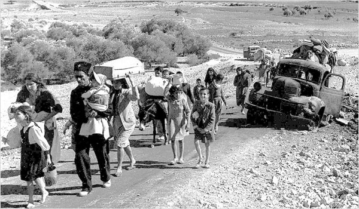
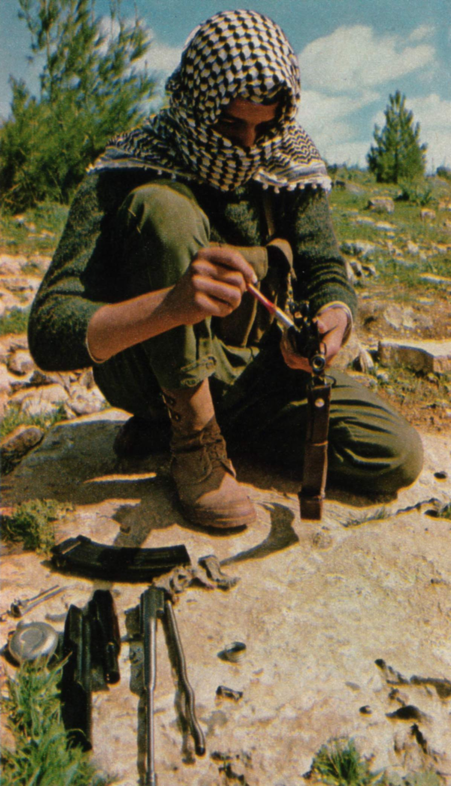
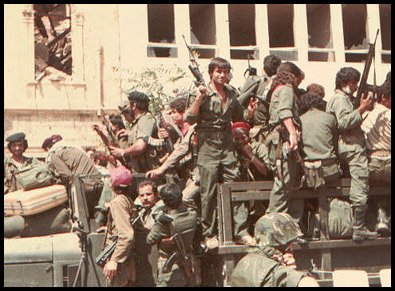
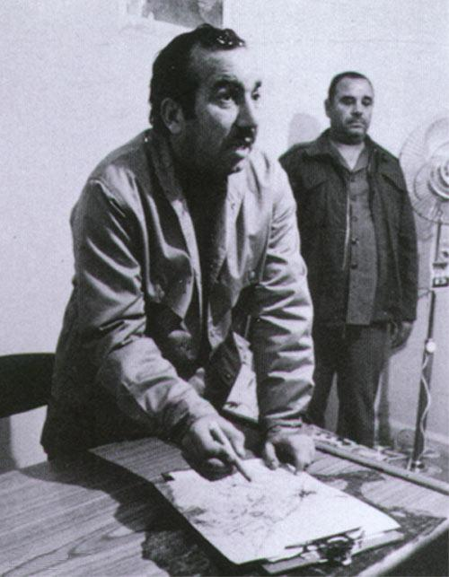
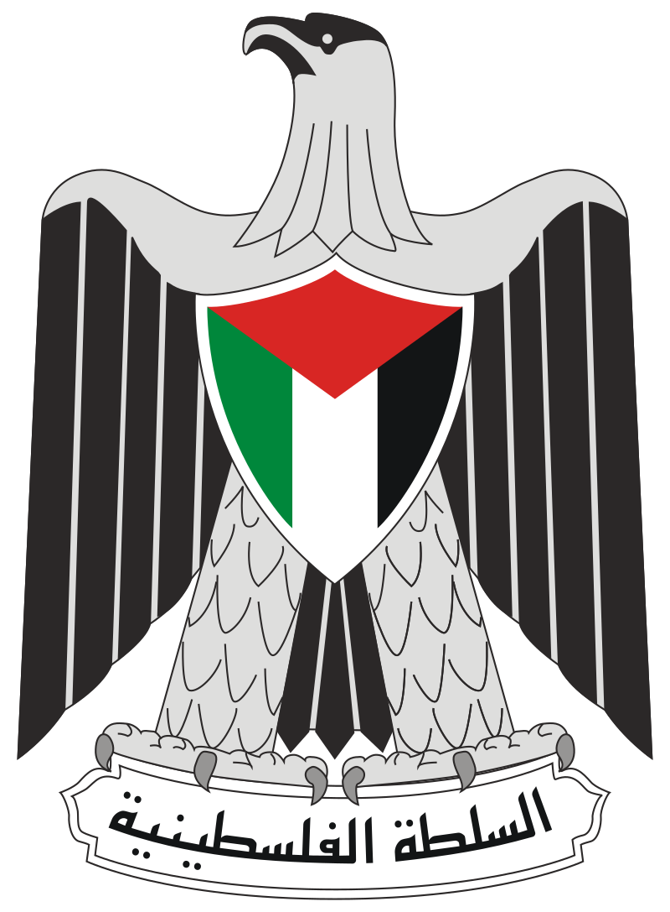

مصطلح يشار به إلى الخلاف السياسي والتاريخي والمشكلة الإنسانية في فلسطين بدءاً من عام 1897 (المؤتمر الصهيوني الأول) وحتى الوقت الحالي. وهي تعدّ جزءاً جوهرياً من الصراع العربي الإسرائيلي، وما نتج عنه من أزمات وحروب في منطقة الشرق الأوسط. يرتبط هذا النزاع بشكل جذري بنشوء الصهيونية والهجرة اليهودية إلى فلسطين، والاستيطان فيها، ودور الدول العظمى في أحداث المنطقة. كما تتمحور القضية الفلسطينية حول قضية اللاجئين الفلسطينيين وشرعية دولة إسرائيل واحتلالها للأراضي الفلسطينية بعدة مراحل. وما نتج عن ذلك من ارتكابها للمجازر بحق الفلسطينيين وعمليات المقاومة ضد الدولة العبرية، وصدور قرارات كثيرة للأمم المتحدة، كان بعضها تاريخيا؛ كالقرار رقم 194 والقرار رقم 242. يُعتبر هذا النزاع، من قبل الكثير من المحللين والسياسيين القضية المركزية في الصراع العربي الإسرائيلي وسبب أزمة هذه المنطقة وتوترها. بالرغم من أن هذا النزاع يحدث ضمن منطقة جغرافية صغيرة نسبياً، إلا أنه يحظى باهتمام سياسي وإعلامي كبير نظراً لتورط العديد من الأطراف الدولية فيه وغالباً ما تكون الدول العظمى في العالم منخرطة فيه نظراً لتمركزه في منطقة حساسة من العالم وارتباطه بقضايا إشكالية تشكل ذروة أزمات العالم المعاصر، مثل الصراع بين الشرق والغرب، علاقة الأديان اليهودية والمسيحية والإسلام فيما بينها، علاقات العرب مع الغرب وأهمية النفط العربي للدول الغربية، أهمية وحساسية القضية اليهودية في الحضارة الغربية خصوصاً بعد الحرب العالمية الثانية والهولوكوست اليهودي وقضايا معاداة السامية وقوى ضغط اللوبيات اليهودية في العالم الغربي. على الصعيد العربي يعدّ الكثير من المفكرين والمنظرين العرب وحتى السياسيين أن قضية النزاع الفلسطيني الإسرائيلي هي القضية والأزمة المركزية في المنطقة وكثيراً ما يربطها بعض المفكرين بقضايا النهضة العربية وقضايا الأنظمة الشمولية وضعف الديمقراطية في الوطن العربي.
يرى البعض أن أطماع اليهود الغربيين في العصر الحديث في الأراضي الفلسطينية بدأت منذ عام 1530 م عندما حاول اليهودي البرتغالي يوسف ناسي الذي كان يعدّ أغنى رجل في العالم حينها بناء مستعمرة لليهود الغربيين يفرون فيها من الاضطهاد الذي يتعرضون له في الغرب.
بدأ اليهود الغربيون في ثمانينيات القرن التاسع عشر، بتبني نظريات جديدة في استعمار الأراضي الفلسطينية تقوم على فكرة استبدال محاولات السيطرة المدنية أو السلمية بالسيطرة المسلحة. وقد كان من أكبر المتبنين لهذه النظرية الحركة الصهيونية العالمية التي قالت: «إن اليوم الذي نبني فيه كتيبة يهودية واحدة هو اليوم الذي ستقوم فيه دولتنا». في أواسط 1880، قامت الحركة الصهيونية في أوروبا بتكوين مجموعة «عشاق صهيون» (المؤتمر الصهيوني الأول كان في بازل عام 1897). طالبت هذه الحركة بإقامة دولة خاصة باليهود، ورأى العديد من الصهاينة أن موقع هذه الدولة يجب أن يكون في مكان الدولة التاريخية اليهودية، المنطقة التي تعرف باسم فلسطين. كانت فلسطين حينئذ جزءاً من الدولة العثمانية وتحظى بحكم محلي (ولاية)، وكانت المنطقة مأهولة بالفلسطينيين العرب بشكل رئيسي (ظل اليهود يشكلون نسبة أقل من 8% حتى عام 1920). لاقى هذا المشروع الصهيوني غضباً شعبياً عم كل فلسطين، ورفضاً قاطعاً من كل الشخصيات السياسية آنذاك، كان من بينهم مفتي القدس أمين الحسيني وعز الدين القسام ولاحقاً عبد القادر الحسيني، وزعماء سياسيين ودينيين وعسكريين آخرين، وكانت هذه هي بدايات نشوء المقاومة الشعبية في فلسطين. فيما تباينت مواقف الشخصيات العربية والحكام العرب في تعاملهم مع هذا المشروع فمنهم من أيد الفلسطينيين في تحقيق مصيرهم ومنهم من التزم الصمت، ومنهم من مد يده لزعماء الحركة الصهيونية من أجل نيل رضى الحكومة البريطانية، مثل الأمير فيصل بن الحسين الذي التقى حاييم وايزمان رئيس المنظمة الصهيونية العالمية، وغيره. أما بالنسبة للدول الغربية فقد رحبت بالمشروع الصهيوني في فلسطين، فتلقى المشروع دعماً مالياً وعسكرياً ولوجستياً من دول كبرى مثل بريطانيا والولايات المتحدة وفرنسا. والتي رأت في كون الدولة العبرية التي يطمح الصهاينة لإنشائها في فلسطين، حماية لمصالحها في المنطقة.
أما بالنسبة للدول الغربية فقد رحبت بالمشروع الصهيوني في فلسطين، فتلقى المشروع دعماً مالياً وعسكرياً ولوجستياً من دول كبرى مثل بريطانيا والولايات المتحدة وفرنسا. والتي رأت في كون الدولة العبرية التي يطمح الصهاينة لإنشائها في فلسطين، حماية لمصالحها في المنطقة.
أعلن الشريف الحُسين بن علي الثورة ضد الأتراك باسم العرب جميعاً. وكانت مبادئ الثورة العربية قد وضعت بالاتفاق ما بين الحُسين وقادة الجمعيات العربية في بلاد الشام والعراق في ميثاق قومي عربي غايته استقلال العرب وإنشاء دولة عربية متحدة قوية، وكانت فلسطين من ضمن المناطق المكونة لهذه الدولة العتيدة. وقد وعدت الحكومة البريطانية العرب من خلال مراسلات الحسين – مكماهون (1915) بالاعتراف باستقلال العرب مقابل إشراكهم في الحرب إلى جانب الحلفاء ضد الأتراك. ونشرت جريدة «القبلة» بيانا رسمياً برفع العلم العربي ذي الألوان الأربعة ابتداءً من (9 شعبان 1335 الموافق 10 حزيران/يونيو 1917) وهو يوم الذكرى السنوية الأولى للثورة. إلا أن بريطانيا نقضت عهدها للعرب، وتمت المصادقة على اتفاقية سايكس بيكو ومن ثم وعد بلفور لتكريس الوجود الصهيوني في فلسطين، وفصل الأخيرة عن محيطها العربي.
تم في عام 1916 عقد تفاهم سري بين فرنسا وبريطانيا ومصادقة روسيا على اقتسام الجزء الشمالي من الأراضي العربية (العراق وبلاد الشام) بين فرنسا وبريطانيا لتحديد مناطق النفوذ في المشرق العربي بعد انهيار الدولة العثمانية، المسيطرة على هذه المنطقة، جراء هزيمتها في الحرب العالمية الأولى.
تقرر أن تقع المنطقة التي اقتطعت فيما بعد من جنوب سوريا وعرفت بفلسطين تحت إدارة دولية (عدا صحراء النقب)، يتم الاتفاق عليها بالتشاور بين بريطانيا وفرنسا وروسيا. ولكن الاتفاق نص على منح بريطانيا مينائي حيفا وعكا على أن يكون لفرنسا حرية استخدام ميناء حيفا مقابل حرية استخدام بريطانيا لميناء اسكندرون السوري الواقع تحت الوصاية الفرنسية
لاحقاً، وتخفيفاً للإحراج الذي أصيب به الفرنسيون والبريطانيون بعد كشف هذه الاتفاقية ووعد بلفور، صدر كتاب تشرشل الأبيض سنة 1922 ليوضح بلهجة مخففة أغراض السيطرة البريطانية على فلسطين. إلا أن محتوى اتفاقية سايكس-بيكو تم التأكيد عليه مجدداً في مؤتمر سان ريمو عام 1920. بعدها، أقر مجلس عصبة الأمم وثائق الانتداب على المناطق المعنية في 24 حزيران 1922.
لقد تبنت إنجلترا منذ بداية القرن العشرين سياسة إيجاد كيان يهودي سياسي في فلسطين قدروا أنه سيظل خاضعاً لنفوذهم ودائراً في فلكهم وبحاجة لحمايتهم ورعايتهم وسيكون في المستقبل مشغلة للعرب ينهك قواهم ويورثهم الهم الدائم يعرقل كل محاولة للوحدة فيما بينهم. وتوجت بريطانيا سياستها هذه بوعد بلفور الذي أطلقه وزير خارجيتها آنذاك.
كانت هناك مصالح مشتركة ذات بعد إستراتيجي، ففي الأساس كانت بريطانيا قلقة من هجرة يهود روسيا وأوروبا الشرقية الذين كانوا يتعرضون للاضطهاد. فوجدت أن لها مصلحة في توظيف هذه العملية في برنامج توسعها في الشرق الأوسط، فحولت قوافل المهاجرين إلى فلسطين بعد صدور الوعد، وقامت بتوفير الحماية لهم والمساعدة اللازمة. فما كان من وزير خارجية إنجلترا آرثر جيمس بلفور إلا أن أصدر وعداً باسم ملك بريطانيا لزعماء الحركة الصهيونية في 2 نوفمبر عام 1917 بتأسيس وطن قومي لليهود على أرض فلسطين
لقي هذا الإعلان معارضة العرب، الذين خدعتهم بريطانيا عندما وعدتهم بالاستقلال إذا وقف العرب بجانبها ضد العثمانيين.
في 3 /1 /1919 وقعت اتفاقية فيصل وايزمان من قبل الأمير فيصل أبن الشريف حسين مع حاييم وايزمان رئيس المنظمة الصهيونية العالمية في مؤتمر باريس للسلام سنة 1919م يعطي بها لليهود تسهيلات في إنشاء وطن في فلسطين والإقرار بوعد بلفور.
سيطر الجيش البريطاني في عام 1917 على فلسطين وشرق الأردن بمساعدة الثورة العربية بقيادة الشريف حسين (التي كانت تسعى إلى استقلال ووحدة الولايات العربية بناء على مراسلات حسين-مكماهون)، وتم تطبيق معاهدة سايكس بيكو وخضعت الأردن وفلسطين للانتداب البريطاني. وفي نفس العام، أرسل آرثر جيمس بلفور، وزير الخارجية البريطاني رسالة إلى البارون ليونيب وولتر دي روتشيلد، يتعهد فيها بتأييد بريطانيا لإقامة وطن قومي لليهود في فلسطين مع ملاحظة أن لا يؤدي ذلك إلى المس بالحقوق المدنية والدينية لغير اليهود في فلسطين، وهو ما عرف فيما بعد بوعد بلفور.
حسب الإحصائيات الرسمية، هاجر 367,845 شخصا (من اليهود وغير اليهود) إلى فلسطين منذ نهاية القرن التاسع عشر، منهم 33304 هاجروا من الناحية القانونية بين 1920 و1945. كذلك هاجر ما بين 50000 و60000 من اليهود، وعدد قليل من غير اليهود، بطريقة غير قانونية خلال هذه الفترة. أدت الهجرة لمعظم الزيادة في عدد السكان اليهود، في حين أن غير اليهود أتت الزيادة إلى حد كبير الزيادة السكانية الطبيعية. لا توجد معطيات وثيقة بشأن الهجرة إلى فلسطين من البلدان العربية.
بدأت بريطانيا بالتعامل بحذر مع الطرفين العربي واليهودي ولكن بحجة معاداة السامية في أوروبا التي نمت خلال أواخر القرن التاسع عشر ومطلع القرن العشرين، كان نتيجتها أن الهجرة اليهودية (ومعظمها من أوروبا) إلى فلسطين بدأت على زيادة ملحوظة، مما خلق الكثير من الاستياء العربي. مما أدى لوضع الحكومة البريطانية قيود على الهجرة اليهودية إلى فلسطين حيث أصدرت الكتاب الأبيض لوقف وتنظيم هجرة اليهود لفلسطين. هذه الحصص مثيرة للجدل، ولا سيما في السنوات الأخيرة من الحكم البريطاني. وقد تنامى الشعور في العديد من الدول العربية لمقاتلة البريطانيين وبعض المنظمات اليهودية التي هاجمت السكان العرب ردا على الهجمات على الجماعات اليهودية. اعتمد اليهود من ناحية عسكرية على منظمة «الهاجاناه» التي كانت ميليشيا شبه سرية تعاونت مع السلطات البريطانية خلال الحرب العالمية الثانية، ثم قاتلت البريطانيين والعرب عشية إلغاء الانتداب. في تلك الفترة نشطت أيضا منظمات يهودية أكثر تطرفا مثل «إرجون» و«مجموعة شتيرن» («ليحي») التي قامت بعمليات إرهابية وشنت حملة عنيفة ضد الأهداف العربية والبريطانية.
هي من أضخم الثورات الشعبية التي قام بها الشعب الفلسطيني ضد المستعمرين الإنجليز واليهود المهاجرين إلى فلسطين في زمن الانتداب البريطاني على فلسطين، كثورة عام 1920، [[1921]] وثورة البراق عام 1929، وإضطرابات 1933. استمرت ثلاث سنين متواصلة ابتداءً من عام 1936 - 1939 اثر وفاة الشيخ عز الدين القسام على أيدي الشرطة البريطانية في جنين. أعلن بعدها الإضراب العام الذي ضم معظم المدن العربية الفلسطينية.
هو الاسم الذي أطلق على قرار قامت الجمعية العامة التابعة لهيئة الأمم المتحدة بالموافقة عليه في 29 نوفمبر 1947، وقضت بإنهاء الانتداب البريطاني على فلسطين وتقسيم أراضيه إلى 3 كيانات جديدة، أي تأسيس دولة عربية وأخرى يهودية على تراب فلسطين وأن تقع مدينتا القدس وبيت لحم في منطقة خاصة تحت الوصاية الدولية. كان هذا القرار المسمى رسميا بقرار الجمعية العامة رقم 181 من أول المحاولات لحل النزاع العربي/اليهودي-الصهيوني على أرض فلسطين.
تبادرت فكرة تقسيم فلسطين إلى دولتين عربية ويهودية مع تحديد منطقة دولية حول القدس في تقرير لجنة بيل من 1937 وتقرير لجنة وودهد من 1938، وصدر هذان التقريران عن لجنتين تم تعيينهما على يد الحكومة البريطانية لبحث قضية فلسطين إثر الثورة الفلسطينية الكبرى التي دارت بين السنوات 1933 و1939.
بعد الحرب العالمية الثانية وإقامة هيئة الأمم المتحدة بدلا لعصبة الأمم، طالبت الأمم المتحدة إعادة النظر في صكوك الانتداب التي منحتها عصبة الأمم للإمبراطوريات الأوروبية، واعتبرت حالة الانتداب البريطاني على فلسطين من أكثر القضايا تعقيدا وأهمية.
وكان للمثقفين الفلسطينيين دور هام في التصدي لسياسة التتريك ومواجهة الهجرة اليهودية إلى بلادهم وقد أسسوا نحو 17 من المنظمات والأحزاب السياسية للتعبير عن آرائهم والدفاع عن حقوقهم الوطنية وارتبطت كثير منها بقضايا المنطقة والأمة العربية.
كان من أهم تلك الأحزاب والتنظيمات: الجمعيات الإسلامية المسيحية، حزب الاستقلال العربي، الحزب الحر الفلسطيني، الحزب الشيوعي الفلسطيني (عصبة التحرير الوطني)، جماعة الإخوان المسلمين، حزب الزراع الفلسطيني، حزب الائتلاف الوطني، مؤتمر الشباب العربي والحزب العربي الفلسطيني.
قامت الحركة الصهيونية خلال فترة الانتداب البريطاني على فلسطين وحتى بعد تأسيس دولة فلسطين بتنفيذ جملة من الأمور المخطط لها مسبقاً والتي كان الهدف منها ترحيل الفلسطينيين والتطهير العرقي لفلسطين، مثل استهداف قرى ومدن فلسطينية بهجمات إرهابية شنتها منظمات الهاجاناه والإرجون والشتيرن تم مناقشة هذه الأساليب المخطط لها مسبقاً من قبل عدة مؤرخين تاريخيين من أمثال إيلان بابيه وبيني موريس ووليد خالدي.
أدت هذه العمليات إلى استيلاء اليهود على ما يقارب 78% من مساحة فلسطين التاريخية، وقتل وتهجير 750 ألف إلى مليون فلسطيني قسريًا إلى دول الجوار وأجزاء أخرى من فلسطين. شكّل اللاجئون الفلسطينيون الذين خرجوا من المناطق التي قامت عليها إسرائيل، نواة جديدة للقضية الفلسطينية.
إذ نزح بين عام 1947 مرورًا بحرب 1948 حوالي 750000 عربي فلسطيني عن بلداتهم. بعد نهاية الحرب تقسمت منطقة الانتداب بين إسرائيل والأردن ومصر حيث منحت إسرائيل الجنسية الإسرائيلية لمن بقي داخل حدودها فقط ورفضت عودة النازحين العرب من خارج هذه الحدود. أما الأردن فمنحت جنسيتها لسكان الضفة الغربية بما في ذلك اللاجئين إليها. أما سكان قطاع غزة واللاجئين إليها فبقوا دون مواطنة إذ رفضت مصر منحهم الجنسية المصرية. يشكل اللاجئون اليوم قرابة نصف الشعب الفلسطيني أي حوالي 6,4 مليون نسمة (2020).
دير ياسين قرية فلسطينية، تقع غربي القدس حدثت فيها مذبحة مروعة في 9 أبريل عام 1948 على يد العصابتين الصهيونيتين: الإرجون والشتيرن. أي بعد أسبوعين من توقيع معاهدة سلام طلبها رؤساء المستوطنات اليهودية المجاورة ووافق عليها أهالي قرية دير ياسين. وراح ضحية هذه المذبحة أعداد كبيرة من السكان لهذه القرية من الأطفال، وكبار السن والنساء والشباب. عدد من ذهب ضحية هذه المذبحة مختلف عليه، إذ تذكر المصادر العربية والفلسطينية أن ما بين 250 إلى 360 ضحية تم قتلها، بينما تذكر المصادر الغربية أن العدد لم يتجاوز 107 قتلى.
كانت مذبحة دير ياسين عاملاً مهمّاً في الهجرة الفلسطينية إلى مناطق أُخرى من فلسطين والبلدان العربية المجاورة لما سببته المذبحة من حالة رعب عند المدنيين. وأضافت المذبحة حِقداً إضافياً على الحقد الموجود أصلاً بين العرب والإسرائيليين.
بعد انتهاء الحرب العالمية الثانية عام 1945، تصاعدت حدّة هجمات العصابات الصهيونية على القوات البريطانية في فلسطين، مما حدا ببريطانيا إلى إحالة المشكلة الفلسطينية إلى الأمم المتحدة، وفي 28 ابريل بدأت جلسة الجمعية العامة التابعة للأمم المتحدة بخصوص قضية فلسطين، واختتمت أعمال الجلسات في 15 مايو 1947 بقرار تأليف (UNSCOP) لجنة الأمم المتحدة الخاصة بفلسطين، وهي لجنة مؤلفة من 11 عضوا، نشرت هذه اللجنة تقريرها في 8 سبتمبر الذي أيد معظم أفرادها حل التقسيم، بينما أوصى الأعضاء الباقون بحل فيدرالي، فرفضت الهيئة العربية العليا اقتراح التقسيم أما الوكالة اليهودية فأعلنت قبولها بالتقسيم، ووافق كل من الولايات الأمريكية المتحدة والاتحاد السوفييتي على التقسيم على التوالي، وأعلنت الحكومة البريطانية في 29 أكتوبر عن عزمها على مغادرة فلسطين في غضون ستة أشهر إذا لم يتم التوصل إلى حل يقبله العرب والصهيونيون.
وفي الفترة التي تلت ذلك، تصاعدت وتيرة العمليات العسكرية من جميع الأطراف، وكانت لدى الصهاينة خطط مدروسة قامت بتطبيقها وكانت تسيطر على كل منطقة تنسحب منها القوات البريطانية، في حين كان العرب في حالة تأزم عسكري بسبب التأخر في القيام بإجراءات فعالة لبناء قوة عربية نظامية تدافع عن فلسطين، ونجحت القوات الصهيونية باحتلال مساحات تفوق ما حصلت عليه في قرار التقسيم، وخرجت أعداد كبيرة من الفلسطينيين من مدنهم وقراهم بسبب المعارك أو بسبب الخوف من المذابح التي سمعوا بها.
وفي 13 مايو وجه حاييم وايزمان رسالة إلى الرئيس الأمريكي ترومان يطلب فيها منه الإيفاء بوعده الاعتراف بدولة يهودية، وأعلن عن قيام دولة إسرائيل في تل أبيب بتاريخ 14 مايو الساعة الرابعة بعد الظهر، وغادر المندوب السامي البريطاني مقره الرسمي في القدس متوجها إلى بريطانيا، وفي أول دقائق من 15 مايو انتهى الانتداب البريطاني على فلسطين وأصبح الإعلان عن قيام دولة إسرائيل نافذ المفعول، واعترفت الولايات الأمريكية المتحدة بدولة إسرائيل بعد ذلك بعشرة دقائق، ولكن القتال استمر ولكن هذه الآن أصبحت الحرب بين دولة إسرائيل والدول العربية المجاورة.
مع نهاية الحرب كانت إسرائيل قد أصبحت واقعا، وسيطرت على مساحات تفوق ما نص عليه قرار تقسيم فلسطين، واحتلت من فلسطين (حسب تقسيم الانتداب البريطاني) كامل السهل الساحلي باستثناء قطاع غزة الذي سيطر عليه المصريون، كما قامت على كامل النقب والجليل وشمال فلسطين، وأصبحت مناطق القدس الشرقية والضفة الغربية جزءا من المملكة الأردنية الهاشمية. وبدأ تاريخ جبهة أعرض من الصراع مع الدول العربية.
أول حرب كانت للعرب بعد ولادة الدولة العربية الحديثة، حرب عام 1948، والتي اعتبرها العرب «نكبة» فسموها حرب النكبة، ويطلقون عليها أيضا حرب فلسطين، أما الإسرائيليون فسموها «حرب الاستقلال». أما في الإعلام الغربي يطلق عليها (الحرب العربية - الإسرائيلية الأولى).
وقد نشبت عقب إعلان قيام دولة إسرائيل على أرض فلسطين يوم 15 مايو 1948 حيث قامت قوات ستة دول عربية (مصر وسوريا والأردن ولبنان والسعودية والعراق) بدخول فلسطين لمنع قيام الدولة العبرية على أرض فلسطين، واستمرت العمليات العسكرية حتى يناير/ كانون الثاني 1949 بعد أن سيطرت إسرائيل عمليا على الأجزاء التي أعطاها إياها قرار التقسيم 194 وأكثر منها.
وفي ذاك التاريخ ولدت مسألة اللاجئين بخروج أكثر من 400 ألف فلسطيني من ديارهم إلى الضفة الغربية (التي اتبعت بالأردن لاحقا) وقطاع غزة (الذي ضمته مصر أيضا)، بالإضافة لدول الجوار والمهجر، ليبدأ الصراع العربي الإسرائيلي.
حققت الجيوش العربية عند فلسطين دخولها بعد 15 مايو 1948 انتصارات معتبرة، حققت القوات المصرية نجاحات ملموسة في القطاع الجنوبي، كذلك القوات الأردنية والعراقية في جبهة القدس وشمال الضفة الغربية. أحدثت تلك العمليات حرجاً للقوات الصهيونية سرعان ما أزيلت آثاره بقرار مجلس الأمن في 22 مايو 1948 بوقف إطلاق النار مدة 36 ساعة، ورفضت الدول العربية ذلك القرار في حينه، فمارست الولايات المتحدة وبريطانيا ضغوطاً مشددة مصحوبة بتهديدات للحكومات العربية. وتقدم الوفد البريطاني في مجلس الأمن بطلب جديد لوقف القتال مدة أربعة أسابيع، وضبط تدفق المتطوعين والسلاح إلى فلسطين إبان تلك الفترة. وفي 2 يونيو أبلغت الدول العربية مجلس الأمن موافقتها على ذلك القرار، وتوقف القتال بالفعل في 11 يونيو وعرفت تلك الفترة بالهدنة الأولى.
إلا أن الإرادة المتزعزعة للحكام العرب في تلك الأيام وعدم التنسيق بين الجيوش العربية رغم تقديمها التضحيات، والدعم والتدريب الذي نالته العصابات الصهيونية على يد بريطانيا منذ الحرب العالمية الثانية، بالإضافة إلى تفوق الإسرائيليين بالعدد، كل هذا أدى إلى هزيمة الجيوش العربية وسقوط أكثر من 78% من أرض فلسطين بيد الدولة العبرية، أي أكثر من المساحة المخصصة لها في التقسيم عام 1947 حيث أعطى لليهود 55% من أرض فلسطين.
هي حكومة تشكلت في غزة في 23 سبتمبر 1948 وذلك خلال حرب 1948 برئاسة أحمد حلمي عبد الباقي. قام جمال الحسيني بجولة عربية لتقديم إعلان الحكومة إلى كافة الدول العربية والإسلامية وجامعة الدول العربية. لاقت هذه الحكومة دعما من بعض الحكومات العربية ومعارضة من حكومات أخرى، حيث عارض كل من الأردن ومصر والعراق، فكرة إنشاءها.
نشأت فكرة تكوين حكومة عموم فلسطين عندما أعلنت بريطانيا عن نيتها التخلي عن انتدابها على فلسطين وأحالت قضيتها إلى الأمم المتحدة. أدركت القيادة الفلسطينية عندئذ، ممثلة آنذاك بالهيئة العربية العليا لفلسطين بزعامة الحاج أمين الحسيني، أهمية التهيؤ لهذا الحدث واستباقه بإيجاد إطار دستوري يملأ الفراغ الذي سوف ينجم عن انتهاء الانتداب البريطاني وكان هذا الإطار هو إقامة حكومة عربية فلسطينية.
بدأ دعم الجامعة العربية للحكومة ينهار إذ امتنعت الجامعة العربية، فيما بعد، عن دعوة الحكومة لحضور اجتماعات مجلس الجامعة؛ كما امتنعت الحكومة المصرية عن السماح لهذه الحكومة بممارسة أنشطتها في قطاع غزة.
بعد الانتهاء من حرب 1948، تم التوقيع على اتفاقيات رودس التي فرضت الهدنة بين إسرائيل وكل من مصر وسوريا والأردن ولبنان. ووقعت كل دولة على الاتفاق بشكل منفصل، ماعدا العراق وتم بموجب هذه الاتفاقيات رسم الخط الأخضر الذي تم تحديده رسميا كخط وقف إطلاق النار، ولكنه أصبح بالفعل حدودا بين دولة إسرائيل الحديثة آنذاك والدول العربية المجاورة. بقيت داخل الخط الأخضر، أي في إسرائيل، عدد من البلدات والمدن العربية الفلسطينية والمدن المختلطة التي يسكنها يهود وعرب. كذلك بقي داخل الخط الأخضر الجزء الغربي من مدينة القدس إذ مر الخط الأخضر وسط المدينة.
أدى رسم الخط الأخضر على أرض الواقع إلى تقسيم فلسطين إلى ثلاث أجزاء، إسرائيل (وهو الجزء الأكبر يشكل ما نسبته 78% من مساحة فلسطين) والضفة الغربية (التي ألحقت بالأردن لاحقا) وقطاع غزة (الذي ضمته مصر)، حيث يشكل الأخيران ما نسبته 22% من مساحة فلسطين التاريخية، قامت إسرائيل باحتلالهما لاحقا في عام 1967.
بدأ هذان المصطلحان بالظهور بعد حرب 1948، حيث تأسست دولة إسرائيل على الأراضي الموعودة للدولة اليهودية في خطة تقسيم فلسطين وعلى أراض إضافية استولى الجيش الإسرائيلي عليها أو تسلمتها إسرائيل بموجب اتفاقيات رودس، أما باقي الأراضي فانقسمت إلى جزأين غير متواصلين، ضم الأردن الأكبر منهما - الضفة الغربية - بناء على الاتفاق الذي ابرم في مؤتمر أريحا وذلك في عام 1949 حيث اجتمعت زعامات فلسطينية من الضفة الغربية وطالبت بالوحدة مع الأردن فكان ذلك وجرت انتخابات نيابية، بينما فرضت مصر الحكم العسكري على الأصغر منهما، أي على قطاع غزة. في 1956 احتل الجيش الإسرائيلي قطاع غزة لمدة 5 أشهر ضمن العمليات العسكرية المتعلقة بأزمة السويس، ثم أعادها إلى الحكم العسكري المصري. في حرب 1967 احتل الجيش الإسرائيلي الضفة الغربية وقطاع غزة وفرضت إسرائيل عليهما الحكم العسكري، ما عدا الجزء الشرقي من مدينة القدس وضواحيها التي ضمتها إسرائيل إلى أراضيها. وبفضل العلاقات السرية بين إسرائيل والأردن استمرت العلاقات بين الأردن والضفة الغربية حتى أعلن العاهل الأردني حسين بن طلال قرار فك الارتباط في 1988 بتنازله عن الضفة الغربية وفك علاقات الأردن بها. في 1982 أكملت إسرائيل انسحابها من شبه جزيرة سيناء بموجب معاهدة السلام المصرية الإسرائيلية، ولكن قطاع غزة بقيت تحت الحكم العسكري الإسرائيلي.
تفاوض السلطة الفلسطينية اليوم ومنذ تأسيسها عام 1994، على قيام دولة فلسطينية مستقلة في الضفة الغربية وقطاع غزة (الذين يشكلان معاً ما نسبته 22% من مساحة فلسطين التاريخية). تقع في هاتين المنطقتين مدن فلسطينية كبيرة مثل القدس الشرقية وغزة ورام الله ونابلس والخليل وجنين. وتتخذ السلطة من مدينتي رام الله وغزة مقرا مؤقتا لمؤسساتها، ريثما تصل المفاوضات لحل.
في الوقت الراهن تخضع منطقتي الضفة الغربية وقطاع غزة لطريقة حكم مختلطة، وبينما تتمتع أجزاء معينة منها من حكم ذاتي، ما زالت أجزاء أخرى منها تخضع للاحتلال الإسرائيلي. وتعدّ مكانة قطاع غزة السياسية معقدة خصوصًا منذ انسحاب الجيش الإسرائيلي منها عام 2005 دون اتفاق بين إسرائيل والسلطة الفلسطينية على طبيعة السلطة فيه، وكذلك بسبب سيطرة حركة حماس عليه رغم معارضة السلطة الفلسطينية لذلك.
يطلق عليها في العالم العربي (العدوان الثلاثي) وفي الإعلام الغربي (أزمة السويس) وفي الإعلام الإسرائيلي (حرب سيناء)، حرب وقعت أحداثها في مصر وقطاع غزة في 1956 وكانت الدول التي اعتدت عليها هي فرنسا وإسرائيل وبريطانيا على أثر قيام جمال عبد الناصر بتأميم قناة السويس. تعرف أيضا هذه الحرب بحرب 1956. دام احتلال إسرائيل لقطاع غزة فيها عدة أشهر استمر حتى 1957.
تسمى بالإعلام الغربي والإسرائيلي (حرب الأيام الستة). هي حرب حدثت عام 1967 بين إسرائيل وكل من مصر وسوريا والأردن وبمساعدة لوجستية من دول عربية عديدة، انتهت بانتصار إسرائيل واستيلائها على باقي فلسطين (قطاع غزة والضفة الغربية) بالإضافة إلى سيناء المصرية وهضبة الجولان السورية. وتنحي الرئيس المصري جمال عبد الناصر عن الحكم بشكل مؤقت. وتهجير المزيد من أبناء الشعب الفلسطيني إلى دول الجوار.
كما ألحقت الحرب هزيمة نفسية بالجيوش العربية بعد أن فقدت الكثير من ثقتها في قدراتها العسكرية وكفاءتها القتالية، في حين ارتفعت معنويات الجيش الإسرائيلي وراجت مقولته «إنه الجيش الذي لا يقهر».
أعلنت إسرائيل عن ضم القدس الشرقية (التي كانت تتبع للأردن إداريا منذ 1951) بشكل انفرادي بعيد النكسة مباشرةً، ففي القرار الإسرائيلي الذي أصدره الكنيست في 27 يونيو 1967 تم بموجبه تخويل حكومة إسرائيل بضمها للجزء الشرقي من القدس، وجعل المدينة بأكملها عاصمة موحدة للدولة العبرية والذي كرس الجهود الإسرائيلية المستمرة لتهويدها.
وشرعت إسرائيل على الفور في نهب الكثير من ثروات الضفة الغربية لا سيما المائية منها، والقيام وبطريقة منهجية بعمليات تهويد للقدس الشرقية. واستطاعت باستيلائها على أراضي الضفة تحسين وضعها الإستراتيجي وقدرتها على المناورة العسكرية، وإزالة الخطر الذي كان من الممكن أن يتهددها من وجود أي جيش عربي منظم ومسلح في الضفة الغربية التي تعدّ القلب الجغرافي لفلسطين التاريخية.
لقد أصبحت الحرب التي أطلق عليها اسم «النكسة» هروبا من وصف الهزيمة إحدى العلامات الفارقة في التاريخ العربي. ورغم مرور أربعين عاما، فإن الحدث لا يزال يلقي بظله الثقيل على العرب والفلسطينيين خاصة، بقصته ونتائجه، وبكيفية النظر للمستقبل من بعده.
كان لتداعيات حرب 1967 أو النكسة وقع كبير على منظمة التحرير الفلسطينية، والتي كانت لا تزال فتية آنذاك، ونتج عنها تأسيس فصائل جديدة منشقة ذات فكر أقرب إلى الماركسية منها إلى القومية العربية، نتيجة لتدهور المشروع القومي العربي في فترة ما بعد النكسة، وبدأ انتشار الفدائيين الفلسطينيين يتركز في دول الطوق وخاصة الأردن ولبنان وسوريا. وبدأ العمل المقاوم يظهر من خارج فلسطين، بعد سقوط الضفة الغربية وقطاع غزة بيد إسرائيل وإكمال احتلالها لأرض فلسطين.
يشار إلى أن النزوح الجماعي للفلسطينيين بعد النكسة عام 1967 إلى دول الجوار وخاصة الأردن، الذي يحوي أصلا نسبة كبيرة من الفلسطينيين منذ النكبة عام 1948، وبسبب قربه جغرافيا من فلسطين، حيث يتشارك بأطول حدود برية معها، أدى إلى تمركز رئيسي لمنظمة التحرير في الأردن والذي استمر حتى عام 1971.
تأسست عام 1964 منظمة التحرير الفلسطينية كمنظمة سياسية شبه عسكرية، معترف بها في الأمم المتحدة والجامعة العربية وكممثل شرعي وحيد للشعب الفلسطيني داخل وخارج فلسطين. جاء تأسيسها بعد انعقاد المؤتمر العربي الفلسطيني الأول في القدس نتيجة لقرار مؤتمر القمة العربي 1964 (القاهرة) لتمثيل الفلسطينيين في المحافل الدولية وهي تضم معظم الفصائل والأحزاب الفلسطينية تحت لوائها. من بينها حركة فتح والجبهة الشعبية والجبهة الديمقراطية وحزب الشعب (الشيوعي)... وغيرها. ويعدّ رئيس اللجنة التنفيذية فيها، رئيسا لفلسطين والشعب الفلسطيني في الأراضي التي تسيطر عليها السلطة الفلسطينية في الضفة الغربية وقطاع غزة بالإضافة إلى فلسطينيي الشتات. وتجدر الإشارة إلى أن حركة حماس وحركة الجهاد الإسلامي ليستا من فصائل منظمة التحرير الفلسطينية وأن الجبهة الشعبية لتحرير فلسطين - القيادة العامة سحبت عضويتها.
كان الهدف الرئيسي من إنشاء المنظمة، عند تاسيسها على يد أحمد الشقيري هو تحرير فلسطين عبر النضال المسلح. إلا أنها تبنت خلال فترة رئاسة ياسر عرفات فكرة إنشاء دولة ديمقراطية علمانية ضمن حدود فلسطين الانتدابية، حيث كان ذلك في عام 1974 في البرنامج المرحلي للمجلس الوطني الفلسطيني، والذي عارضته بعض الفصائل الفلسطينية وقتها، حيث شكلت ما يعرف بجبهة الرفض.
في عام 1988 تبنت منظمة التحرير رسميا خيار الدولتين في فلسطين التاريخية، والعيش جنبا لجنب مع إسرائيل في سلام شامل يضمن عودة اللاجئين واستقلال الفلسطينيين على الأراضي المحتلة عام 1967 وبتحديد القدس الشرقية عاصمة لهم.
في عام 1993 قام رئيس اللجنة التنفيذية بمنظمة التحرير آنذاك ياسر عرفات بالاعتراف رسميا بإسرائيل، في رسالة رسمية إلى رئيس الوزراء الإسرائيلي آنذاك إسحق رابين، في المقابل اعترفت إسرائيل بمنظمة التحرير كممثل شرعي وحيد للشعب الفلسطيني. نتج عن ذلك تأسيس السلطة الفلسطينية في الضفة الغربية وقطاع غزة، والتي تُعتبر من نتائج اتفاق أوسلو بين المنظمة وإسرائيل.
تميزت العلاقة بين المنظمة والعديد من الدول العربية بفترات من الشد والجذب بحسب انسجام المواقف السياسية لهذه الدول أو اختلافها مع توجهات المنظمة. وكانت المملكة الأردنية الهاشمية مثالا بارزا على ذلك، فأغلب سنوات حكم الملك حسين شهدت العلاقة بينهما تأزما وصل في بعض الفترات إلى حد الانفجار كما حدث في عام 1970 - 1971 وهي الأحداث التي اشتهرت باسم أيلول الأسود.
كان من أكثر أسباب الخلاف بين الحكومة الأردنية والفدائيين الفلسطينيين الموجودين بالأردن، هو شعور الحكومة الأردنية بوجود كيان مستقل لمنظمة التحرير عنها داخل الدولة الأردنية، وهو ما اطلقت عليه مصطلح «دولة داخل دولة»، كذلك عمليات خطف الطائرات الغربية التي كانت المنظمة تقوم بها ويتم تفجيرها لاحقا في صحراء الأردن. وكان تيار في الجبهة الشعبية لتحرير فلسطين على رأس هذه العمليات التي أدانتها لاحقا، حيث كان وديع حداد العقل المدبر لعمليات الاختطاف هذه. وكان تعليله بالتخطيط لهذه العمليات هو تعريف العالم بوجود قضية شعب فلسطين.
معركة وقعت في 21 آذار 1968 بين قوات الجيش الأردني والفدائيين الفلسطينيين من جهة وقوات الجيش الإسرائيلي من جهة أخرى، حين حاولت القوات الإسرائيلية احتلال الضفة الشرقية من نهر الأردن لأسباب تعدّها إسرائيل إستراتيجية. وقد عبرت النهر فعلا من عدة محاور مع عمليات تجسير وتحت غطاء جوي كثيف. فتصدت لها قوات الجيش الأردني وفصائل منظمة التحرير الفلسطينية المتواجدة هناك على طول جبهة القتال بقوة في قرية الكرامة حيث التحموا مع الجيش الإسرائيلي في قتال شرس. استمرت المعركة أكثر من 16 ساعة، مما اضطر الإسرائيليين إلى الانسحاب الكامل من أرض المعركة تاركين وراءهم ولأول مرة خسائرهم وقتلاهم دون أن يتمكنوا من سحبها معهم. وتمكنت القوات الأردنية ومنظمة التحرير في هذه المعركة من تحقيق النصر والحيلولة من تحقيق إسرائيل لأهدافها.
أيلول الأسود هو الاسم الذي يشار به إلى شهر أيلول من عام 1970 م، والذي يعرف أيضًا «بفترة الأحداث المؤسفة». في هذا الشهر تحرك الجيش الأردني بناء على تعليمات الملك حسين لوضع نهاية لوجود المنظمات الفلسطينية المتواجدة في المدن الأردنية والتي أرادت إحداث تغيير في الأردن. لم تكن العلاقات بين الملك حسين وجمال عبد الناصر جيدة الأمر الذي أعطى منظمة التحرير قوة دافعة داخل الأردن مرده أن الأنظمة العربية المجاورة للأردن سوف تتدخل إلى صالح المنظمات الفلسطينية إذا ما نشب الصراع مع الجيش الأردني إلا أن ذلك لم يحدث، اضطرت بعدها القيادة الفلسطينية أن تنسحب من عمّان إلى الريف الأردني في الشمال، وبالأخص أحراش جرش بعد انعقاد مؤتمر القاهرة بين الملك حسين وياسر عرفات برعاية جمال عبد الناصر قبيل وفاته بأيام فقط، إلا أنه تجدد الصدام بين منظمة التحرير والحكومة الأردنية في تموز 1971، مما أدى إلى خروج قوات الثورة الفلسطينية من الأردن نهائيا ومعها جميع الفدائيين وأسلحتهم إلى لبنان.
ما إن استقرت منظمة التحرير الفلسطينية في لبنان حتى اشتعلت الحرب الأهلية عام 1975 وتورطت فيها فصائل المقاومة الفلسطينية وبدلا من أن يتوجه رصاص أطراف النزاع إلى إسرائيل توجه نتيجة لهذه الفتنة إلى صدور اللبنانيين والفلسطينيين والسوريين أنفسهم. لكن هذا لا يعني أن عمليات المقاومة الفلسطينية لم تهدئ ضد إسرائيل على الجبهة اللبنانية، ففي 1978 قام الجيش الإسرائيلي بغزو جنوب لبنان لغرض مطاردة المقاتلين الفلسطينيين كعملية انتقامية لهجوم فلسطيني على حافلة ركاب إسرائيلية في تل أبيب أدت إلى مقتل 35 إسرائيليا ولكن الأزمة انتهت بتدخل مجلس الأمن وانسحاب إسرائيل.
حرب أهلية نشبت بين أطراف لبنانية مختلفة بعد نزوح الفدائيين الفلسطينيين إلى لبنان من الأردن عام 1971، اضطلع الطرف الفلسطيني فيها بدور محوري، نتيجة رفض الموارنة الوجود الفلسطيني في لبنان، الذي أرسى أسسه اتفاق القاهرة عام 1969. في حين ورط الفلسطينيين تحالفهم مع اليسار اللبناني، في الحرب الأهلية اللبنانية، التي عدها البعض حربا بين اللبنانيين والفلسطينيين.
حيث هاجمت ميليشيات حزب الكتائب اللبناني اليميني الفلسطينيين في حافلة شرق بيروت في يوم 13 أبريل 1975. كانت تلك الشرارة لبدء القتال في كل أنحاء البلاد، حيث تحالفت الحركة الوطنية اللبنانية مع منظمة التحرير الفلسطينية وسيطرا على ما يقرب من 70% من لبنان في أبريل 1976. في يونيو من نفس العام، القوات السورية تدخل لبنان وسرعان ما تصبح الأقوى في البلاد، وتسيطر على كثير من المواقع الإستراتيجية المهمة، لكن في 14 مارس 1978 قامت القوات الإسرائيلية بغزو جنوب لبنان، بهدف خلق منطقة عازلة بعرض 10 كيلومترا في عمق الأراضي اللبنانية. وجدت إسرائيل أن احتلال الأراضي كان سهلا وسرعان ما سيطرت على 10% من جنوب البلاد.
انتهت الحرب الأهلية اللبنانية عمليا في عام 1989 بعد معاهدة الطائف. إلا أن منظمة التحرير كانت قد خرجت من الصراع منذ خروجها من لبنان في عام 1982 إلى تونس ودول عربية أخرى أثر الاجتياح الإسرائيلي للبنان، باستثناء حرب المخيمات التي نشبت ما بين 1985 و1988 والتي كان لبقايا
قدم رونالد ريغان ضمان شخصيا للمقاتلين الفلسطينيين بالحفاظ على أمن عائلاتهم إذا ما غادروا إلى تونس واضطرت إسرائيل إلى الموافقة على خروج المقاتلين تحت حماية دولية مكونة من 800 جندي مارينز أمريكي، و800 جندي فرنسي و400 إيطالي. غادر 14,614 مقاتل فلسطيني بيروت إلى سوريا وعدة دول عربية تحت القصف الإسرائيلي، بالرغم من الحماية الدولية، بينما غادرت القيادة الفلسطينية إلى تونس.
في 10 آب 1982 شهدت تونس حدثاً مهماً إذ استقبلت زعيم منظمة التحرير الفلسطينية ياسر عرفات وجميع عناصره الذين كانوا في بيروت إثر الحصار الإسرائيلي المفروض عليها وذلك بعد الدور الدبلوماسي الذي لعبته تونس عربياً (بعد انتقال مقر الجامعة العربية من القاهرة إلى تونس عقب اتفاقية كامب ديفيد) ودولياً.
خلال الأعوام 1985 و1988 و1991 قامت إسرائيل وعملائها بشن غارات على مكاتب لمنظمة التحرير الفلسطينية في تونس، اغتالت فيها اثنين من أكبر قيادات المنظمة وهم خليل الوزير (أبو جهاد) وصلاح خلف (أبو إياد).
اتخذت منظمة التحرير الفلسطينية من تونس مقرا لها طوال نحو عشر سنوات، قبل أن يمهد اتفاق للسلام أبرم عام 1993 الطريق أمام عودتها إلى الضفة الغربية وقطاع غزة
يضم الاتجاه الإسلامي في الفصائل الفلسطينية فصيلان رئيسيان، هما حركة الجهاد الإسلامي في فلسطين وحركة المقاومة الإسلامية (حماس). كانت نشأة حركة الجهاد الإسلامي ثمرة حوار فكري وتدافع سياسي شهدته الحركة الإسلامية الفلسطينية أواخر السبعينات وقادته مجموعة من الشباب الفلسطيني أثناء وجودهم للدارسة الجامعية في مصر، وكان على رأسهم مؤسس الحركة فتحي الشقاقي. نتيجة للحالة التي كانت تعيشها الحركة الإسلامية في ذلك الوقت من إهمال للقضية الفلسطينية كقضية مركزية للعالم الإسلامي والحالة التي عاشتها الحركة الوطنية من إهمال الجانب الإسلامي لقضية فلسطين وعزلها عنه، تقدمت حركة الجهاد الإسلامي كفكرة وكمشروع في ذهن مؤسسها حلاً لهذا الإشكال.
في أوائل الثمانينات وبعد عودة الدكتور الشقاقي وعدد آخر من السياسيين إلى فلسطين تم بناء القاعدة التنظيمية لحركة الجهاد وبدأ التنظيم لخوض غمار التعبئة الشعبية والسياسية في الشارع الفلسطيني بجانب الجهاد المسلح ضد إسرائيل، كحل وحيد لتحرير فلسطين.
أما بالنسبة لحركة حماس فأعلن عن تأسيسها الشيخ أحمد ياسين في ديسمبر 1987، حيث اجتمع سبعة من كوادر وكبار قادة جماعة الإخوان المسلمين العاملين في الساحة الفلسطينية، وكان هذا الاجتماع إيذانًا بانطلاق حركة حماس وبداية الشرارة الأولى للعمل الجماهيري ضد الاحتلال الذي أخذ مراحل متطورة.
أصدرت حماس بيانها الأول عام 1987 إبان الانتفاضة الفلسطينية التي اندلعت في الفترة من 1987 وحتى 1994، لكن وجود التيار الإسلامي في فلسطين له مسميات أخرى ترجع إلى ما قبل عام 1948 حيث تعدّ حماس نفسها امتدادا لجماعة الإخوان المسلمين التي تأسست في مصر عام 1928. وقبلا إعلان الحركة عن نفسها عام 1987 كانت تعمل على الساحة الفلسطينية تحت اسم «المرابطون على أرض الإسراء» و«حركة الكفاح الإسلامي».
ساهمت منظمة التحرير الفلسطينية مع غيرها من فصائل المقاومة الأخرى في انتفاضة 1987 التي أعادت القضية الفلسطينية إلى الأجندة العالمية من جديد بعد سنوات من الإهمال السياسي. وكان من أهم نتائج هذه الانتفاضة إضافة إلى الخسائر المادية التي ألحقتها بإسرائيل أن أزالت الخوف من صدور الشباب الفلسطيني وأعادت خيار المقاومة المسلحة إلى صدارة الحلول المطروحة لحل المشكلة الفلسطينية.
إرهاصات تلك الانتفاضة كانت كثيرة ومتراكمة، لكن شرارة الانطلاق كانت في 8 ديسمبر 1987 حينما أقدمت آلية عسكرية إسرائيلية على دهس مجموعة من العمال الفلسطينيين أمام حاجر بيت حانون (إيرز) بصورة متعمدة، فاستشهد اثر هذا الحادث 5 وأصيب 7، جميعهم من مخيم جباليا للاجئين (أكثر مخيمات غزة ازدحاما بالسكان)، فكانت ثورة الغضب التي سرعان ما انتشرت في جميع أنحاء قطاع غزة، خصوصا في اليوم التالي، عقب تشييع جثامين الشهداء، وما هي إلا ساعات حتى امتدت الشرارة إلى مدن ومخيمات الضفة الغربية، فخرجت المظاهرات الغاضبة من كل مكان، وسط ذهول وصدمة سيطرت على إسرائيل، فاضطر رئيس وزرائها في ذلك الحين إسحاق شامير لقطع زيارة خارجية كان يقوم بها، لكي يقف على حقيقة ما يجري، والتطور الكبير الذي لم يكن في الحسبان.
ورغم أن الثورة التي أشعلها الفلسطينيين كانت شعبية، ولم يُستخدم فيها السلاح، إلا أن الجيش الإسرائيلي تعامل معها بكل قسوة، وأصدر قادته الأوامر بوقفها بكل الطرق الممكنة، فبدأت الطائرات بإلقاء القنابل الدخانية والمسيلة للدموع لتفريق عشرات الآلاف من المتظاهرين، فيما أطلق الجنود العنان لرشاشاتهم التي حصدت الكثير وأوقعت العشرات بين قتيل وجريح في الأيام الأولى من تلك الهبّة التي حملت فيما بعد اسم «انتفاضة».
ومن ضمن الصور التي غيرت صورة الفلسطينيين في الوعي الإنساني وجعلت قضيتهم بالفعل على رأس القضايا السياسية والأخلاقية، الصور التي التقطت في الأسابيع الأولى من الانتفاضة. والسبب الجوهري في بقاء وتأثير هذه الصورة هو أنها أعادت تركيب وبناء المفاهيم حول المقاومة الفلسطينية. فعلى عكس الخمسينيات والستينات والسبعينات من القرن الفائت، والتي كانت المقاومة الفلسطينية فيها مرتبطة بالخطف والتفجيرات والعمليات المسلحة، كانت الانتفاضة الأولى حركة مقاومة يقودها أطفال المدارس والشباب بالحجارة. وبدون دعم أو تحريض إقليمي أو دولي، وبدون حافز أو محرك غير الحرية من الاحتلال. ويظهر الشباب في الصورة وهم يواجهون القوات الإسرائيلية في أرض معركة مكشوفة، من دون الاحتماء بالشوارع الجانبية وليس معهم أي شيء سوى حجارة الشارع والعلم الفلسطيني.
استمرت انتفاضة الحجارة عدة سنوات، حيث أن بداية تلك الانتفاضة لم يقررها أحد، لكن نهايتها كانت بقرار سياسي، إذ أصبح 13 سبتمبر 1993 آخر أيامها، حينما وقعت اتفاقية إعلان المبادئ في العاصمة النرويجية أوسلو بين منظمة التحرير الفلسطينية والدولة العبرية أو مايطلق عليه اتفاق أوسلو، وعادت بعدها طلائع القوات الفلسطينية إلى غزة والضفة الغربية. وبدأت مرحلة جديدة في تاريخ الشعب الفلسطيني، مرحلة أخذ فيه الصراع منحى جديدا، لكن الثورات لم تتوقف، فشهد العام 1996 ما سمي بـ«هبّة النفق» اثر إقدام السلطات الإسرائيلية على فتح نفق أسفل المسجد الأقصى، قبل أن تندلع بعد ذلك بأربع سنوات انتفاضة أخرى أطلق عليها انتفاضة الأقصى.
قام المجلس الوطني الفلسطيني في 15 نوفمبر 1988 بإعلان استقلال دولة فلسطين على جزء من أرض فلسطين التاريخية، تم ذلك خلال انعقاد الدورة التاسعة عشرة (دورة الانتفاضة) المنعقدة في الجزائر. ويطلق إعلاميا على إعلان الاستقلال بوثيقة إعلان الاستقلال. مع نهاية الإعلان عزف النشيد الوطني الفلسطيني. بعدها قامت 105 دول بالاعتراف بهذا الاستقلال، وقامت منظمة التحرير بنشر 70 سفيراً فلسطينياً في عدد من الدول المعترفة بالاستقلال. يذكر أن الشاعر محمود درويش هو من كتب وثيقة الاستقلال، وبأن الرئيس الفلسطيني الراحل ياسر عرفات هو من قرأه.
كان موقف القيادة في منظمة التحرير منقسما على نفسه في حربا الخليج الأولى والثانية، ففي حرب الخليج الأولى (1980-1988) آثرت بعض القيادات الفلسطينية في بادئ الأمر، التقرب إلى إيران بسبب شعارات الثورة الإسلامية التي نادت بتحرير القدس ومعاداة الإمبريالية والصهيونية، فيما احتفظت بعض الفصائل الفلسطينية الأخرى بعلاقات جيدة مع العراق خاصة تلك القومية منها.
أما في حرب الخليج الثانية عام 1991، والتي نشبت على أثر غزو العراق للكويت عام 1990، فكان موقف منظمة التحرير بالإجماع ضد الحرب على العراق، بالرغم من وجود اختلافات بين قيادات المنظمة في تأييد ورفض نتائج الغزو العراقي للكويت، فكانت منظمة التحرير من المصوتين بالتحفظ على المشاركة في أي حرب ضد العراق في مؤتمر القمة العربي الطارئ الذي عقد بالقاهرة في عام 1990 إلى جانب الجزائر والسودان وليبيا، واعتبرت الحرب عدوانا على الأمة العربية.
يشار بالذكر إلى أن تأييد بعض القيادات العليا في منظمة التحرير لغزو العراق للكويت عام 1990 قد أدى إلى نتائج وخيمة على المنظمة وأبناء الشعب الفلسطيني المقيمين في الكويت، والذي كان يقدر عددهم قبل الغزو بقرابة 400,000 مقيم. حيث خسرت المنظمة دعما لوجستيا وماديا خليجيا استمر لعقود، وقاعدة جماهيرية كبيرة كانت موجودة بالكويت، حيث غادرت عشرات الآلاف من الأسر الفلسطينية العاملة من هناك ومن مناطق مختلفة بالخليج إلى الأردن والعراق والضفة الغربية وأوروبا والولايات المتحدة.
هو مؤتمر سلام عقد في مدريد في إسبانيا في نوفمبر 1991، تم التحضير له بعيد حرب الخليج الثانية، وشمل مفاوضات سلام ثنائية بين إسرائيل وكل من سوريا، لبنان، الأردن ومنظمة التحرير الفلسطينية. وكانت محادثات ثنائية تجري بين أطراف النزاع العربية وإسرائيل وأخرى متعددة الأطراف تبحث المواضيع التي يتطلب حلها تعاون كل الأطراف. اعترفت منظمة التحرير الفلسطينية بقرار 242 الصادر عن مجلس الأمن والذي يحمل في طياته اعترافا ضمنيا بدولة إسرائيل بعد أن ظلت لسنوات تعارضه وتعدّه تفريطا في الحقوق التاريخية للشعب الفلسطيني.
ترأس وفد منظمة التحرير الفلسطينية حيدر عبد الشافي، لكن لم يكن تمثيل الفلسطينيين وقتها بشكل مستقل، حيث كان الوفد الفلسطيني ضمن الوفد الأردني المشارك، حيث كانت إسرائيل تشترط ذلك لحضور المؤتمر.

اتفاقية أو معاهدة أوسلو هو اتفاق سلام وقعته إسرائيل ومنظمة التحرير الفلسطينية في مدينة واشنطن، الولايات الأمريكية المتحدة، في 13 سبتمبر أيلول 1993، وسمي الاتفاق نسبة إلى مدينة أوسلو النرويجية التي تمت فيها المحادثات السرّية التي أفرزت هذا الاتفاق. وجاء الاتفاق بعد مفاوضات بدأت في العام 1991 في ما عرف بمؤتمر مدريد.
وتنص الاتفاقية على إقامة سلطة حكومة ذاتية انتقالية فلسطينية (أصبحت تعرف فيما بعد بالسلطة الوطنية الفلسطينية)، ومجلس تشريعي منتخب للشعب الفلسطيني، في الضفة الغربية وقطاع غزة، لفترة انتقالية لا تتجاوز الخمس سنوات، مقابل اعتراف منظمة التحرير بإسرائيل. ومن المفترض، وفقا للاتفاقية، أن تشهد السنوات الانتقالية الخمس، مفاوضات بين الجانبين، بهدف التوصل لتسوية دائمة على أساس قراري مجلس الأمن 242 و338. ونصت الاتفاقية أيضًا، على أن هذه المفاوضات سوف تغطي القضايا المتبقية، بما فيها القدس، اللاجئون، المستوطنات، الترتيبات الأمنية، الحدود، العلاقات والتعاون مع جيران آخرين. إلا أن المتابعين لهذه الاتفاقية يرون أنها قد تسببت في تقويض الموقف الفلسطيني، حيث عارضها الكثير من قيادة منظمة التحرير، لاسيما أن كثير من بنودها لم تطبق على الأرض.
هي حكم ذاتي فلسطيني كان نتاج اتفاق أوسلو بين منظمة التحرير الفلسطينية وإسرائيل، وأنشأت بقرار من المجلس المركزي الفلسطيني في دورته المنعقدة في 10 أكتوبر 1993 في تونس، ويعول عليها أن تكون نواة الدولة الفلسطينية المقبلة على جزء من أرض فلسطين التاريخية وهي الضفة الغربية وقطاع غزة وعاصمتها القدس، والتي طالما حلم بها الشعب الفلسطيني. تأسست السلطة الوطنية الفلسطينية على أساس إعلان المبادئ بين الفلسطينيين والإسرائيليين حول الحكم الذاتي المرحلي في واشنطن 13 سبتمبر 1993، وفي إطاره تم إعطاء الصلاحيات المدنية بشكل مؤقت لحين مفاوضات الوضع النهائي التي كان من المفترض أن تجري بعد 3 سنو
يقوم الفلسطينيون في الأراضي الفلسطينية (الضفة الغربية وقطاع غزة) بانتخاب رئيس السلطة الوطنية الفلسطينية وأعضاء المجلس التشريعي. يقوم الرئيس بتعيين المدعي العام ويختار رئيس الوزراء ويكون مسؤولا عن قوات الأمن والشرطة الفلسطينية.يقوم رئيس الوزراء باختيار مجلس الوزراء.
في عام 1996 انتخب ياسر عرفات رئيسا لمناطق الحكم الذاتي. وفي العام نفسه غيرت منظمة التحرير الفلسطينية بصورة رسمية الجمل والعبارات الموجودة في ميثاقها الداعية إلى القضاء على دولة إسرائيل وتعهد عرفات بمحاربة الإرهاب. حيث تم رسميا في 14 ديسمبر 1998، شطب 12 بند من أصل 30 وتغيير جزئي في 16 بند، في تصويت المجلس الوطني الفلسطيني بأغلبية ثلثي المقاعد في الجلسة التي حضرها الرئيس الأمريكي آنذاك بيل كلينتون في غزة.
هي مبادرة أطلقها الملك عبد الله بن عبد العزيز ملك السعودية للسلام في الشرق الأوسط بين إسرائيل والفلسطينيين هدفها إنشاء دولة فلسطينية معترف بها دولياً على حدود 1967 وعودة اللاجئين وانسحاب من هضبة الجولان المحتلة مقابل اعتراف وتطبيع العلاقات بين البلدان العربية مع إسرائيل وكانت في عام 2002 في القمة العربية في بيروت. وقد نالت هذه المبادرة تأييدا عربياً وهي من المواقف العربية التي تثبت إجماعهم على تحقيق السلام العادل والشامل.
هو الاسم الذي تعرف به خطة السلام الأخيرة في الشرق الأوسط، أعدت الخطة بواسطة ما يعرف باللجنة الرباعية الدولية، التي تضم الأمم المتحدة والولايات المتحدة والاتحاد الأوروبي وروسيا استنادا على «رؤية الرئيس الأمريكي بوش» التي أوضحها في كلمة ألقاها في 24 يونيو 2002. تدعو «خارطة الطريق» إلى البدء محادثات للتوصل لتسوية سلمية نهائية -على ثلاث مراحل- من خلال إقامة دولة فلسطينية بحلول عام 2005. تضع خريطة الطريق تصورا لإقامة دولة فلسطينية ذات حدود مؤقتة بنهاية العام 2004، وبعد الالتزام باتفاق لوقف إطلاق النيران، سيتعين على الفلسطينيين العمل من أجل قمع «المتشددين». أما إسرائيل سيتعين عليها الانسحاب من المدن الفلسطينية وتجميد بناء المستوطنات في الأراضي المحتلة.
اندلعت انتفاضة الأقصى في سبتمبر 2000 عقب الزيارة التي قام بها أرييل شارون المتورط في مجازر عدة بحق الشعب الفلسطيني من أشهرها مجزرة صبرا وشاتيلا 1982. وشاركت مختلف فصائل المقاومة الفلسطينية في هذه الانتفاضة وكبدت إسرائيل خسائر بشرية ومادية موجعة. واتهمت الحكومة الإسرائيلية أحد فصائل المنظمة (حركة فتح) وكتائب شهداء الأقصى التابعة لها بالإرهاب كما وصفتها الإدارة الأميركية بالشيء نفسه ووضعتها على قائمة المنظمات الإرهابية المطلوب محاربتها وتفكيكها، الأمر الذي وضع المنظمة نفسها بين مطرقة الضربات الإسرائيلية وسندان الضغوط الأميركية.
هي اسم يطلق على عملية التوغل التي قام بها الجيش الإسرائيلي في مخيم جنين (ضمن حملة اجتياح شاملة للضفة الغربية) في الفترة من 3 إلى 12 أبريل 2002 واستمرت نحو 10 أيام، قالت إسرائيل بأنها بهدف القضاء على المجموعات الفلسطينية المسلحة في المخيم. الاجتياح أعقب عملية تفجير في فندق في مدينة نتانيا. دارت معارك شرسة خلال الاجتياح. أدى الاجتياح إلى وقوع 52 قتيلاً فلسطينياً (بينهم 22 من المدنيين بحسب منظمة مراقبة حقوق الإنسان). اعترف الجانب الإسرائيلي بمقتل 23 من جنوده.
هي عملية تشنها قوات الاحتلال الإسرائيلي على قطاع غزة منذ يوم 27 ديسمبر 2008م كما تقول ردا على إطلاق صواريخ «قسام» على يد عناصر من منظمتي حماس والجهاد الإسلامي الفلسطينيتين. تعدّ هذه العملية أكبر مذبحة يتم ارتكابها من قبل الجيش الإسرائيلي ضد الفلسطينيين منذ حرب 67، بدأت هذه العملية يوم السبت الموافق 27 ديسمبر 2008 في ساعة الذروة وبلغ عدد الضحايا من الفلسطينيين خلال 22 يوماً 1305 قتيل وأكثر من 5400 جريح من بينهم ما نسبته 46% من الأطفال والنساء.
دولة فلسطين هي الدولة التي تطالب بإنشائها الجهة الفلسطينية الرسمية على جزء من أرض فلسطين التاريخية وهو الضفة الغربية وقطاع غزة وعاصمتها القدس الشرقية، بجانب الدولة الإسرائيلية الحالية. على الرغم من إعلان قيام الدولة الفلسطينية في عام 1988 في الجزائر، إلا أن الإعلان قد تم من طرف واحد دون أن يكون لذلك تداعيات عملية على أرض الواقع.

حل الدولة الواحدة هو حل مقترح للصراع العربي الإسرائيلي، وهو المقابل لمحاولات تتمحور حول حل الدولتين والذي يحظى بتأييد معظم الدول. يدعو أنصار حل الدولة الواحدة إلى إنشاء دولة واحدة في إسرائيل والضفة الغربية وقطاع غزة بحيث يكون للسكان العرب واليهود مواطنة وحقوق متساوية في الكيان الموحد ثنائي القومية، وبينما يتبنى البعض هذا التوجه لأسباب أيدولوجية، فإن البعض الآخر يرى فيه الحل الوحيد الممكن نظرا للأمر الواقع القائم على الأرض.
مصطلح صفقة القرن هو مقترح وضعه الرئيس الأمريكي دونالد ترامب لإنهاء الصراع الإسرائيلي الفلسطيني، حيث تهدف هذه الصفقة لتوطين الفلسطينيين خارج الأراضي الفلسطينية المحتلة، وإنهاء حق اللجوء.
| اسم الموقع | الربط |
|---|---|
| ويكيبيديا | الربط |
| الاسم | اعمال | سنة |
|---|---|---|
| زياد حنفي | المبرمج | 12 |